Avant / après
Même application, même données, même largeur de fenêtre. « Avant » = main avant la refonte,
« après » = branche feat/unslop-rest-of-site. Aucune maquette.
Console IA
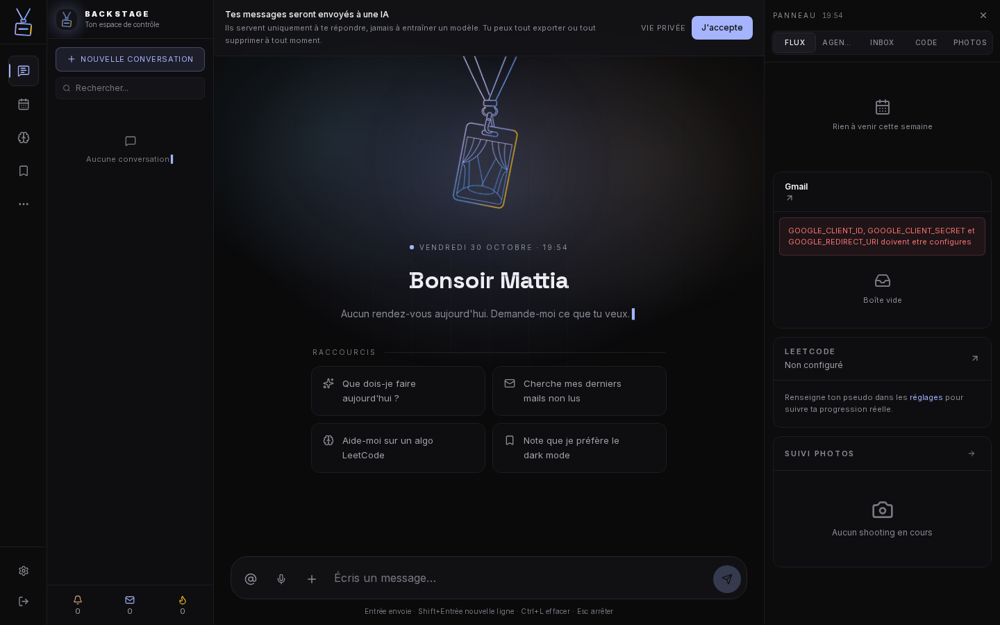
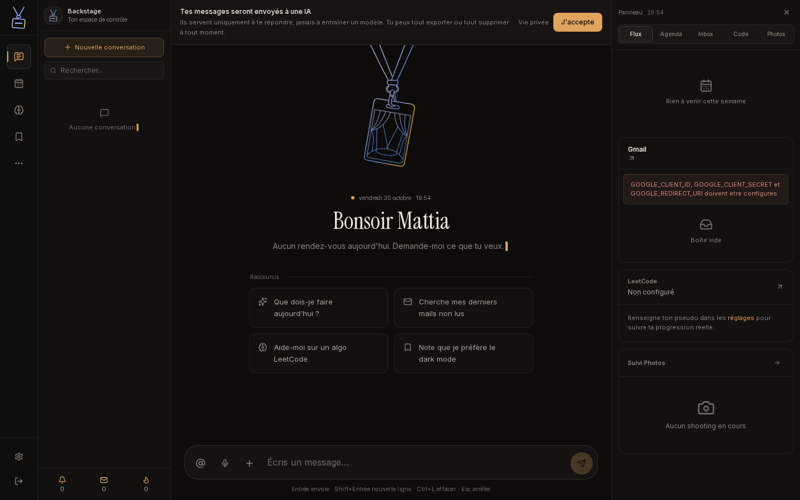
Rappels
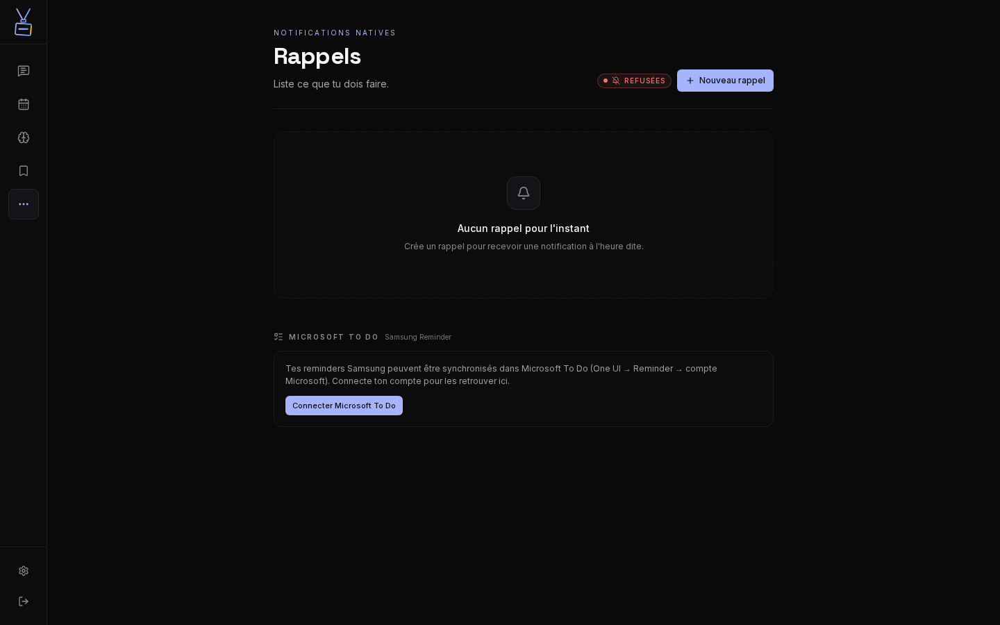
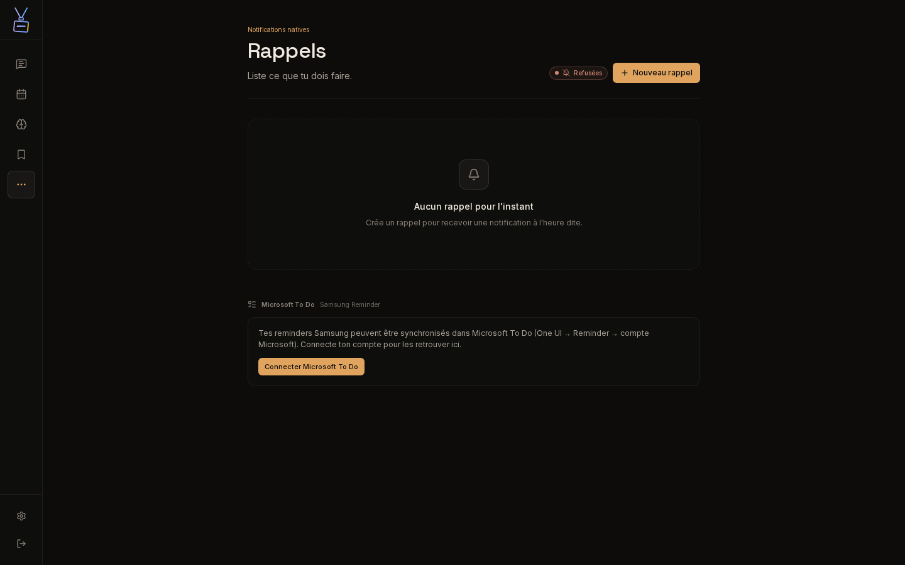
Connexion
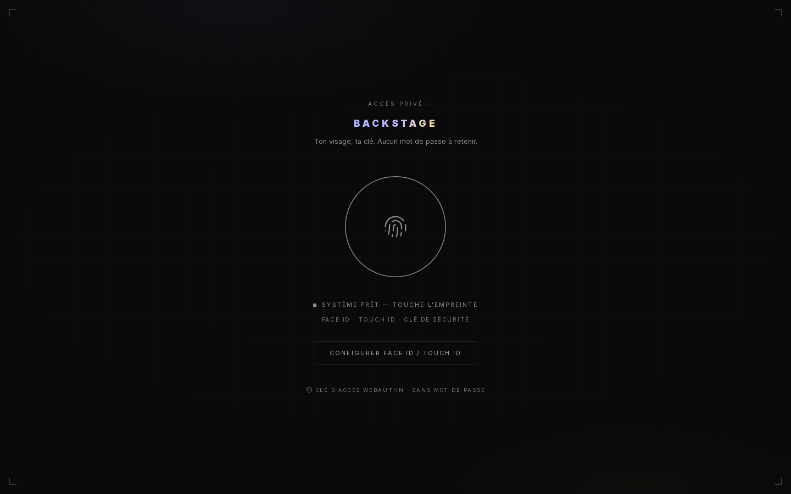
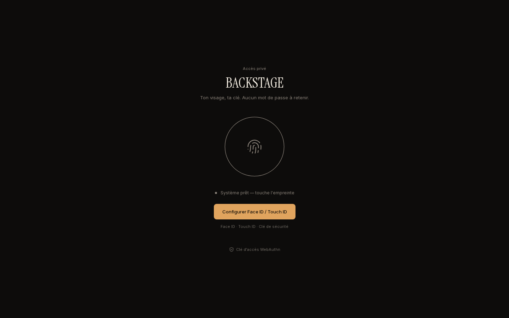
Réglages
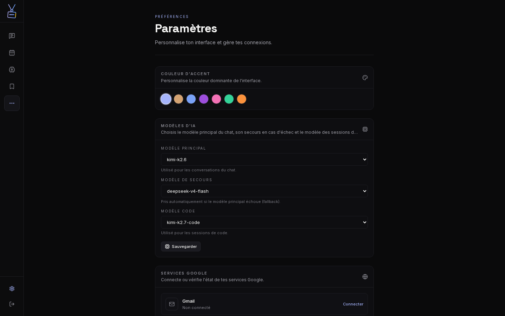
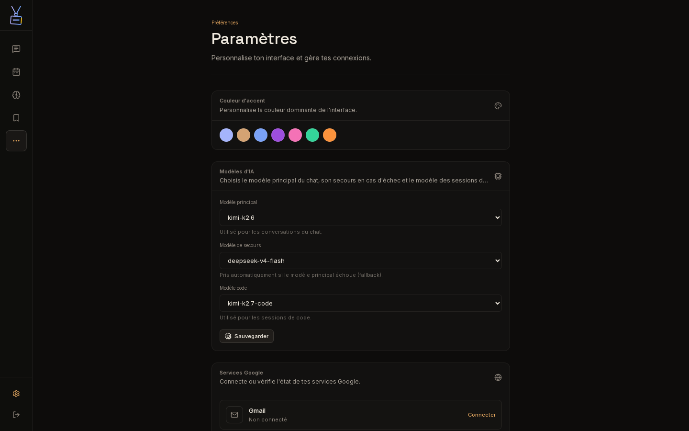
Photos
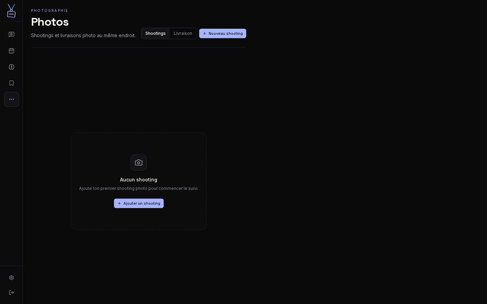
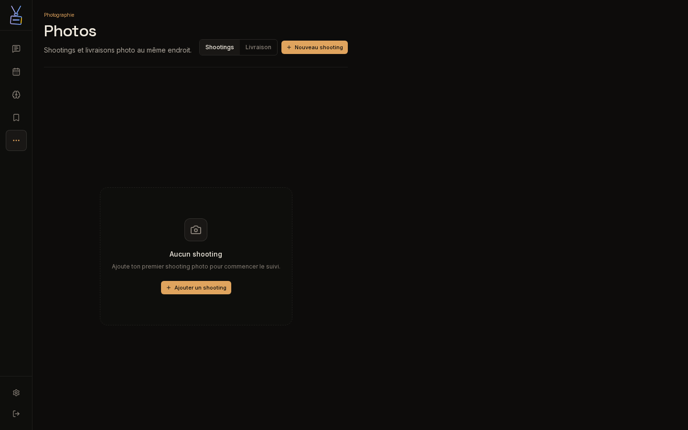
Aujourd'hui
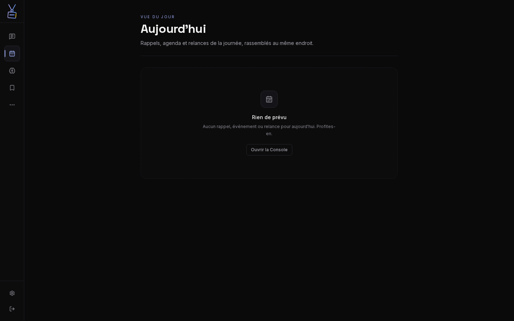
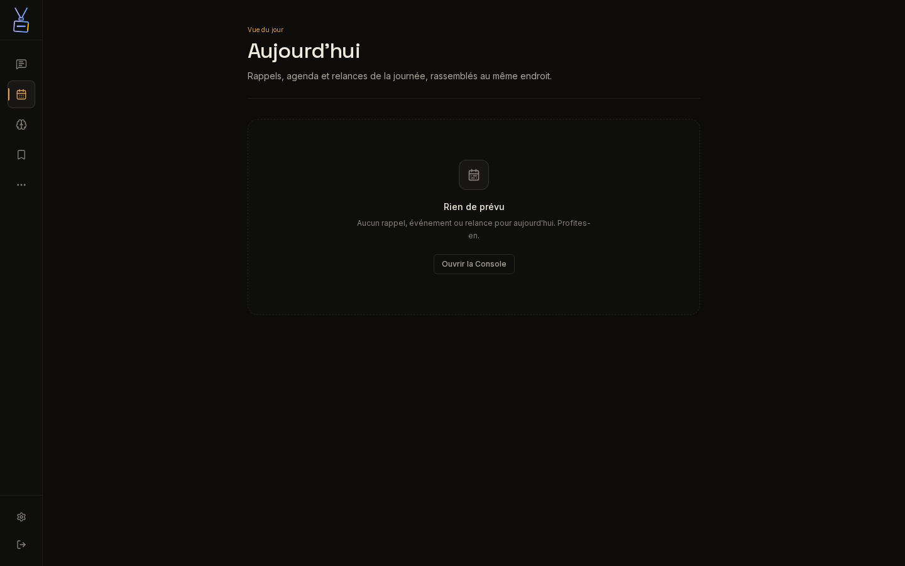
Les captures ont été prises sur deux serveurs de développement lancés côte à côte, avec la même session et les mêmes données locales. L'indicateur de développement Next a été retiré des images.